“穿越了，自带八十万重兵。” “李世民怎么了，我避他锋芒？” “明天玄武门对掏。” “怎么有个毛脸雷公嘴的和尚？”
人少玄武门，人多香积寺。
爱你侄子，奉天见 爱你老哥，玄武门见
[憨笑][赞]初中的时候，crush给我唱这个，我以为他在玩抽象，后来才发现他在跟我表白，我当时还说他有病。。。
队友不就是敌人吗？ 跟对面请来的似的[憨笑]
这道题应该选B[微笑][微笑][微笑]，有时候猪队友才是你最大的敌人
谁带出来的兵，心里清楚
错了的人把王者删了吧，都回家吧～[黑脸]
不瞒各位！我现在吃席身上都得带俩塑料袋子。我可以不吃但我家狗必须打包回去。从大酒店出来我也不在乎别人的眼光。如果不是为了狗我都礼到人不到[捂脸][尬笑]
80后的左手是不是都有一道伤疤[泪奔] 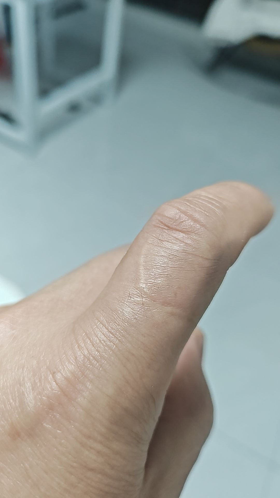
83年的猪路过[泣不成声][泣不成声][泣不成声]43岁了，祝自己今天生日快乐！
83年的猪已经抗癌三年了，我还没有孝敬父母，还有两个年幼的儿子，我不想死还想活二十年[流泪]不知道大家会不会给我一声鼓励吗？
慢慢浸佢慢慢叹佢
抱着尾巴乖死了[色]
入来入去轻飘飘[憨笑][赞]
感觉水油油的，仔细一看原来全是毛[憨笑][憨笑][憨笑]
学而不思则瓦，思而不学则go[愉快][愉快][愉快]
不知道啊 可能我是图书管理员吧
当你看到这张图的时候，你所期望的事情就要实现啦！记得谢谢小猫[愉快]
啊，这也太可爱了吧[猪头]它想和我回家[害羞]
🐱：别看我，你打就打 不要说是我的问题[笑哭][笑哭]
传说中的水鬼名叫水猴子。水里力大无穷
《镜子没有辐射》[憨笑][感谢]真的可以请高人了
懂事的男孩已经自己怀上了
这就是：为什么对人类幼崽和对猫咪没有抵抗力的原因[尬笑][尬笑][尬笑] 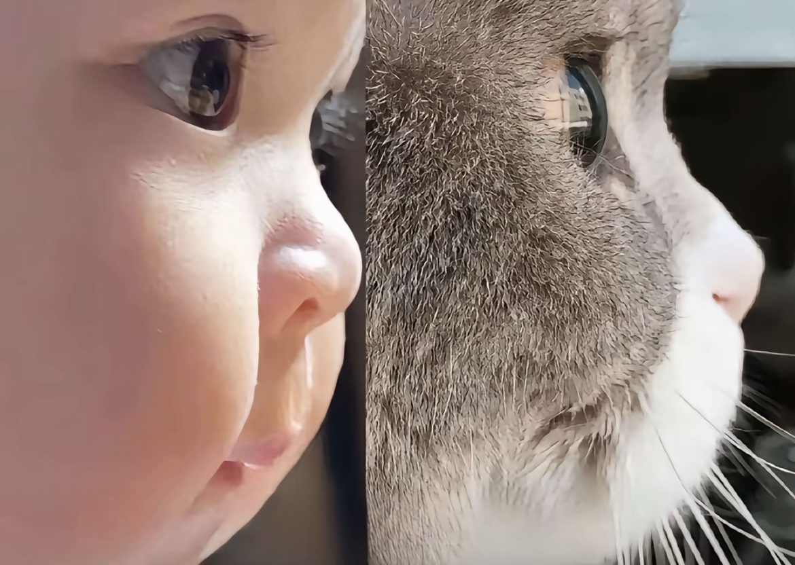
最近生育率降低了，女娲也开始认真捏了[比心][比心] 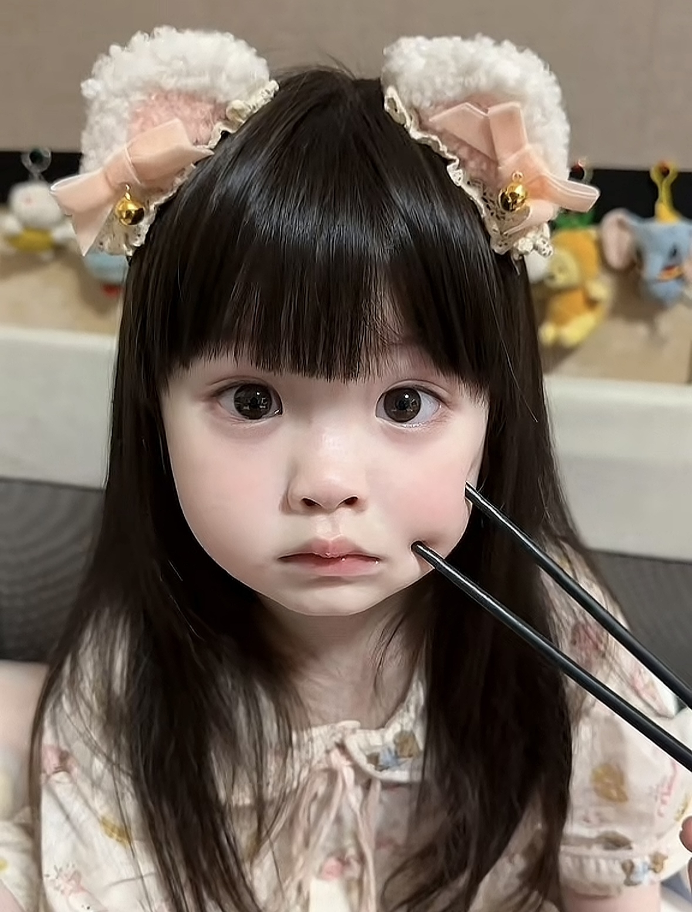
这种颜值还考虑二胎吗[尬笑] 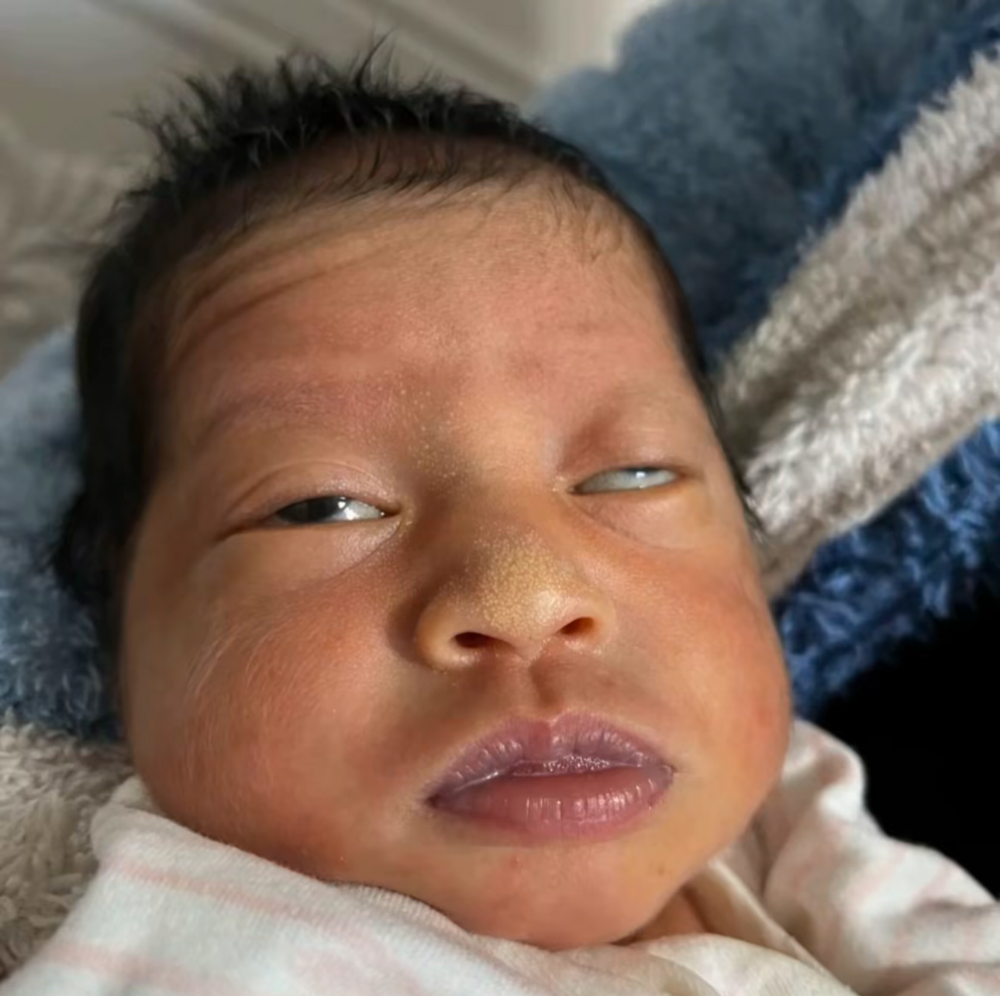
红汉服的是金塔融媒[憨笑][抱拳]不用谢我
我觉得 那俩小孩站那里 到时候拍出来的照片是不是放教科书上面[泣不成声]
说真的[黑脸]那红衣服的摄影这辈子与摄影无缘 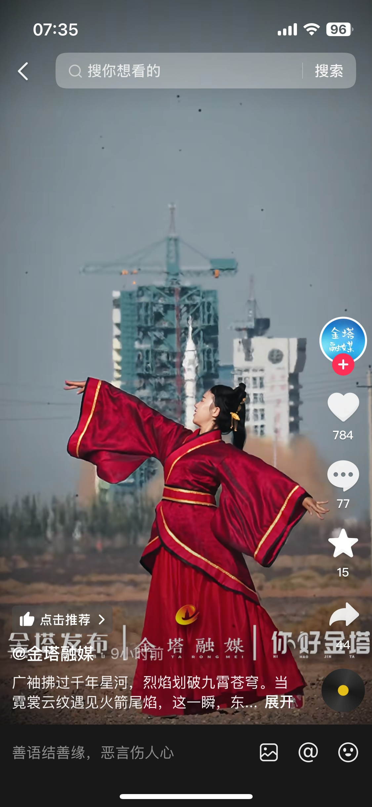
[笑哭]大家别纠结 那两个 敬礼的少年队员和那个跳舞的女孩了，都是地方政府专门来拍摄文旅宣传视频的，至于敬礼为什么手举了那么高 可能是因为看到火箭升空 激动不由自主的手也举高了，这也无伤大雅呀。至于想来现场看发射也很简单，只要有发射任务，你到酒泉的旅行社 都会有航天观礼的服务的。
当年有个火箭发射现场跳敦煌舞的感觉很好 千年飞天梦 飞天大祭司的感觉
很难想象在一个家族荣耀视频底下居然全是抨击人家的[泪奔]你管人家干啥在那儿跳，肯定是人家让跳呗[泪奔]没配音乐觉得尴尬，配了音乐喊燃的又是你们你是让你们看火箭发射了，还是让你们看她跳舞来了[泪奔]
文旅宣传拍点视频而已 评论区戾气咋这么重[捂脸]
什么都不知道就开麦的才是显眼包[暗中观察] 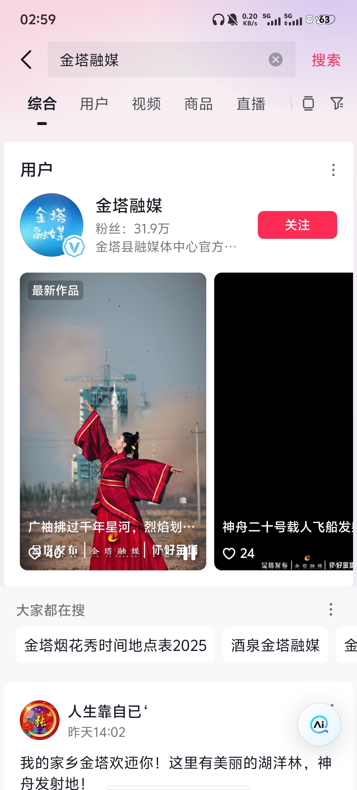
感恩者VS背刺者
就投了
现在就怀疑，实际上明朝时期应该有一大批抽象老祖，把朝鲜国的人骗的团团转，古筝用弦子拉，结婚打扮的和出殡一样。。。
韩国确实是音乐大国，每次都能精准的找到乐器的麻筋儿
深切体会了什么叫“呕哑嘲哳难为听”[噢买尬]
老祖：一想到我给后人留了些彩蛋，我就想笑[捂脸][OK]
喜事听了想哭，丧事听了想笑[看]
搜了一下真有这个，叫轧筝，原视频很好听[猪头]
搁那招魂呢[微笑]
他们听不出来难听吗
老祖宗里有老六[九转大肠]
我一直以为音乐是共通的，是我年轻了
我们精神病医院之前收了个流浪汉，他带了只小狗，医院不能养后面让同事亲戚领养了，他脑子不算太清醒，有时吃饭只吃一半，问他怎么不吃完，他说要留给他的小狗。
说大爷虐狗的来云龙湖湖底领奖[捂脸] 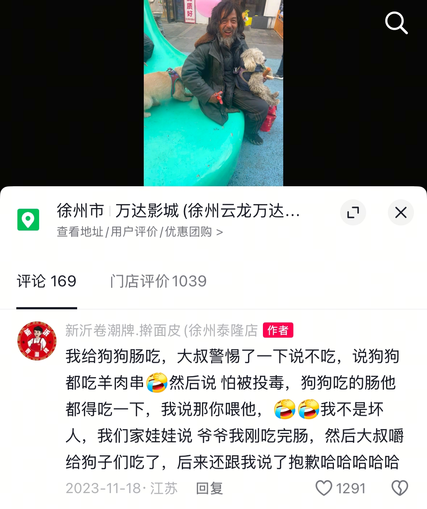
同志们，我等下云龙万达，去看一下他还在不在，等我消息
真实情况是这样哦 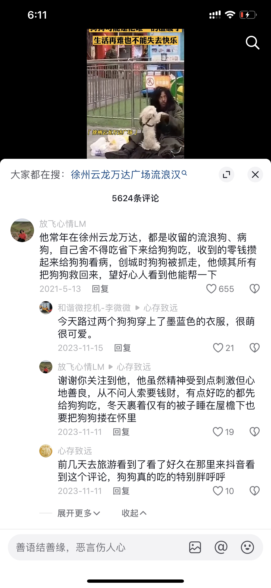
虽然我的主人在流浪，但是我们不是流浪狗，我们有主人。[流泪][流泪][流泪] 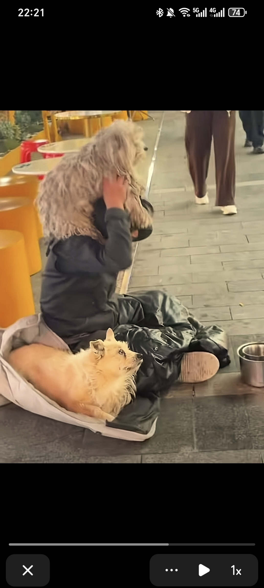
前几年在徐州救过他们，两只狗狗 一个悟空一个八戒。本来打算我自己养悟空，但是悟空离不开流浪大叔[流泪]，狗狗真的很忠诚。
没有钱治疗，放下来了[宕机] 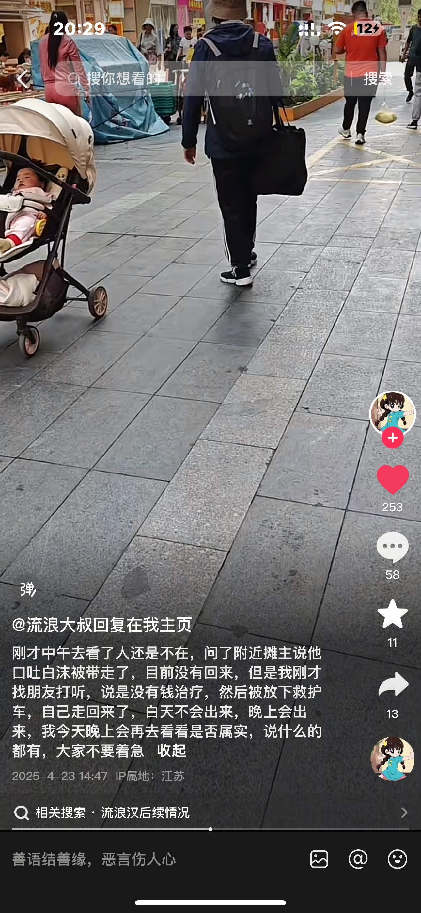
看的出来小狗被养的很好，肥嘟嘟的，乖乖的，除了有一点点脏 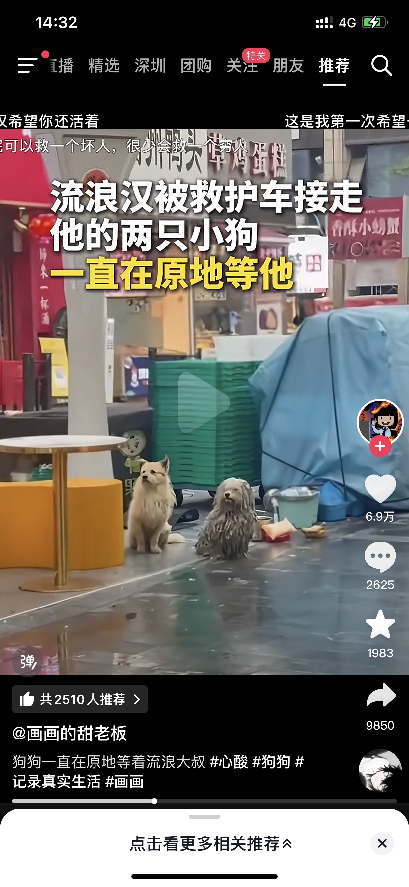
它们还在吗。我有基地想救助它们。我前几天还发他们呢。 有没有联系方式啊 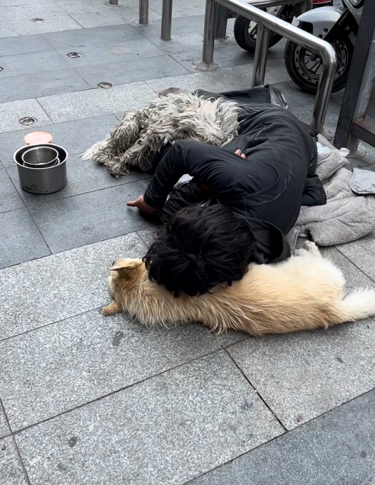
我是一直觉得这世界糟糕透了，我还没走就因为我的猫还等着我喂[微笑]
梦回大唐双龙传[泣不成声][泣不成声] 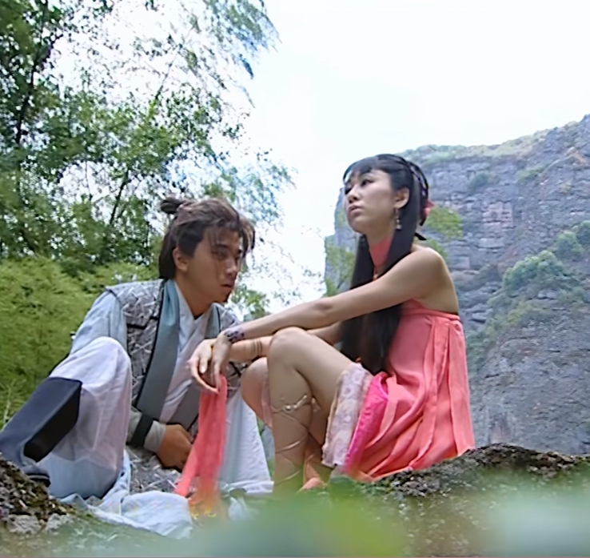
难怪了不包邮也没见你们闹过[泣不成声][泣不成声][泣不成声]
怪不得新疆哈密的哈密瓜甜 金子种的
早就发现了吧，都是资本再运作吧，告诉你们，要降啦
怪不得不给你们包邮[流泪][流泪][流泪][流泪][流泪][流泪]
记得大一的时候有一天晚上很黑，我晚上突然想上厕所，那时候室友全都睡着了，我就摸着黑去上厕所，之后我就上完厕所回来了，然后爬上床继续睡觉了
749局，以为是个大片，没想到，确实大，硬硬的一大泡💩
真实经历，前几年年30上高速和我老婆一起去四川，路过湖南，然后没油了，最近服务区80公里，感觉油开不到，就在附近下了高速，这个高速口，一个路灯没有，进去就是山，很冷，感觉不对劲，开了几百米回头了，重新上高速，就看到一个老太婆，穿着古代衣服，提着蓝色灯笼，走在我车旁边，我问老婆，老婆说没看到，我就感觉身上好冷，好冷，后面就在路上把她弄走了，想不起叫什么服务区了
我怎么会喜欢这样的视频，诡异清冷神秘，像是另外一个维度空间。
“哪个乱世没有离别…”[快哭了]
如果不能走到最后 相遇的意义是什么
真想跪下来求自己不要再看甄嬛传了，但是跪下来又可以告发熹贵妃私通
主线人物一半都死在她手上，大胖橘也差点被她药死，宜搜也被她炸翻，她才是大女主，妥妥反派大女主[流泪]
太牛了，完全靠眼神传递 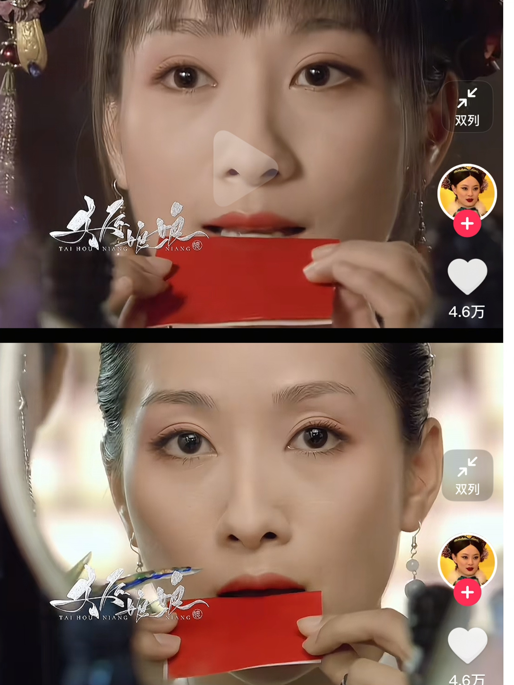
我觉得这个角色没拿奖可惜了，最难演就是这个角色了
陶昕然演安陵容才25，相当于现在的00后小花[黑脸]
明明是一个人，但是后期真的气质不一样了，前期唯唯诺诺，后期眼神坚定大方了
谁能想到鹂妃吃苦杏仁是拍的第一场戏
她生错了年代啊，这么有能力应该去隔壁大如姐弄死女主[看]
安陵容真的尽她的努力活得久了[玫瑰]
@白猫 其实我感觉陶昕然演的挺好的，黑化终于不是烟熏妆加黑衣服了，我一直认为黑化就是眼神加心态的变化[泪奔]
鸟妃全是眼技的，而且是随人物心态变化而潜移默化的那种变化，演这片子的时候才20几，真的牛
虽然安陵容坏，但……就是喜欢她，她真的非常非常努力想往上爬，非常非常卷，一手好牌打出王炸 [赞][赞][赞]
虽然没啥黑化妆，但是陵容后期刘海梳上去真的让人感觉这个人好阴冷啊[宕机]
作为交换，把我们的空军基地展示给你们[酷拽]
林少波抖音 大家去吧 我书读得少 不知道用什么词评论他
那么久了，视频终于走出陆丰了
现在才搬出来应该是匹配到高级队友了
我朋友说二胡没有固定的音阶，纯靠感觉，你这也太有感觉了吧[泣不成声]
中西方音乐还是有差距的，就比如说，贝多芬弹一晚上的钢琴我也不懂他的忧伤，但是农村的二胡一响，我就知道200块没了[九转大肠]
一根弦能搞定的事，小提琴为啥要那么多弦[看][看][看][看][看]
起猛了，看见小提胡了，啊不对，看见二琴了，啊不对，我再去睡会儿[暗中观察]
《癞疙包》
丢到人堆里可以疏散人群[微笑]
“来玩呀来玩呀 呐 你不是喜欢这个嘛 ”
这是善良摇粒绒
我宣布这是世界第一好的摇粒绒
狗：麻，快给我不善言辞的喵弟吃猫条。 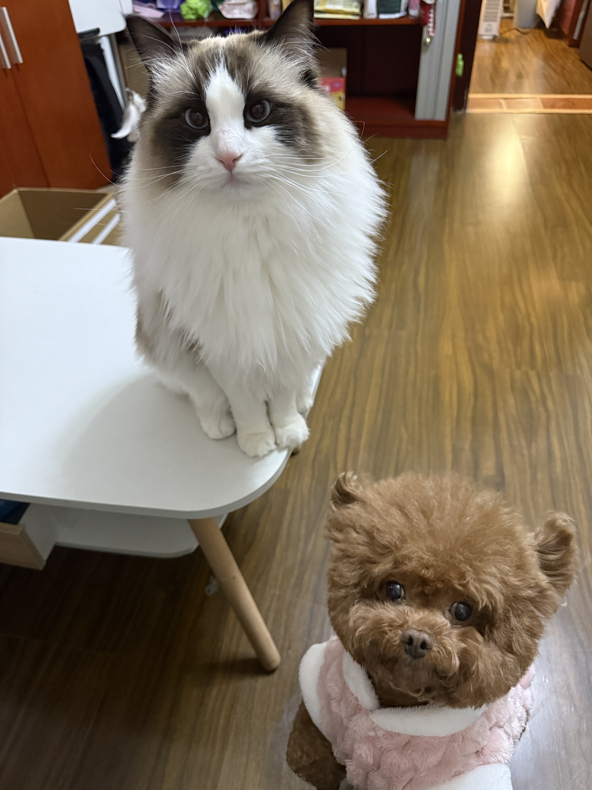
天呐 好可爱
小猫喜欢小狗尾巴 小狗给小猫玩，小狗好 小猫玩小狗尾巴，小猫好
笨猪老师已经结婚了吗[流泪]
啊？都有孩子了啊[发呆]
Read more: